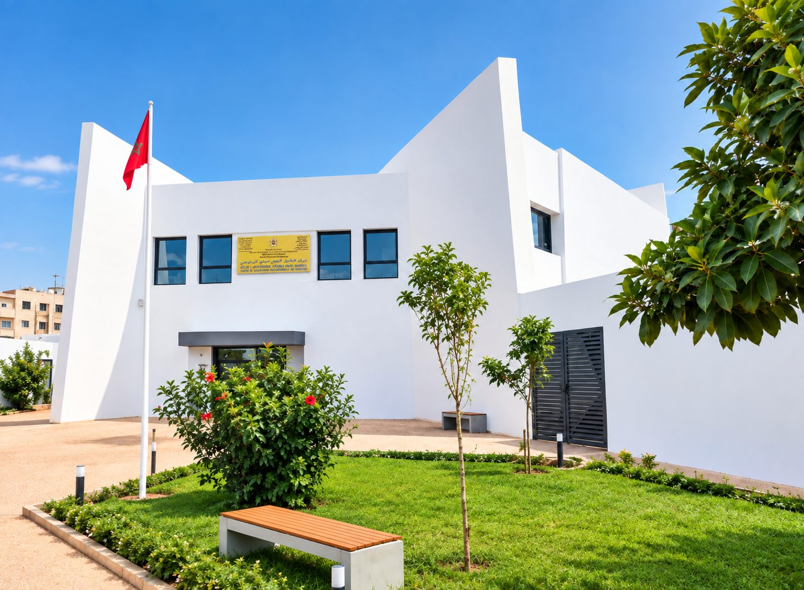
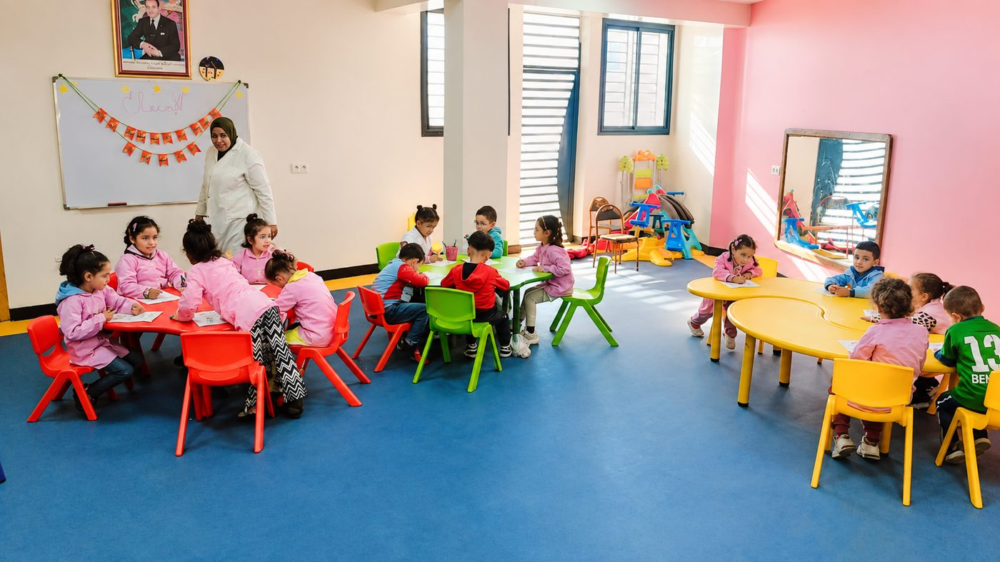

وزارة الشباب والثقافة والتواصل
مركز التأهيل المهني بسيدي البرنوصي يكوّن مجانا الشباب من 15 إلى 30 سنة في المطعمة والتغذية، الحلاقة والتجميل، المعلوميات، التربية وحضانة الأطفال، والملابس الجاهزة، مع تكوين تطبيقي بنسبة 80% داخل المقاولة.
يتبع مركز التأهيل المهني بسيدي البرنوصي المديرية الجهوية للشباب بالدار البيضاء الكبرى والمديرية الإقليمية سيدي البرنوصي، ويستقبل كل سنة شباب الحي وما جاوره من أحياء البرنوصي، لتعلم مهنة معترف بها ومطلوبة في سوق الشغل.
يجمع التكوين بين حصص تكنولوجية داخل المركز وتداريب تطبيقية بالمقاولات، ليتخرج كل متدرب(ة) بكفاءة حقيقية ودبلوم معترف به من الدولة.

خمسة مجالات مهنية، من دبلوم التخصص إلى الدبلوم التقني. يختلف المستوى الدراسي المطلوب ومدة التكوين حسب كل مهنة.
التكوين مفتوح أمام الذكور والإناث من 15 إلى 30 سنة، مع إمكانية استثناءات في السن حسب بعض مهن التكوين. للتأكد من شروط التسجيل الدقيقة، يرجى التواصل مع المركز.

يضم المركز روض وحضانة الابتسامة، الذي يستقبل الأطفال من سنتين ونصف إلى 6 سنوات، في فضاء آمن وملون، تؤطره طاقم مكوَّن على أنشطة التفتح المبكر ومواكبة الطفل.